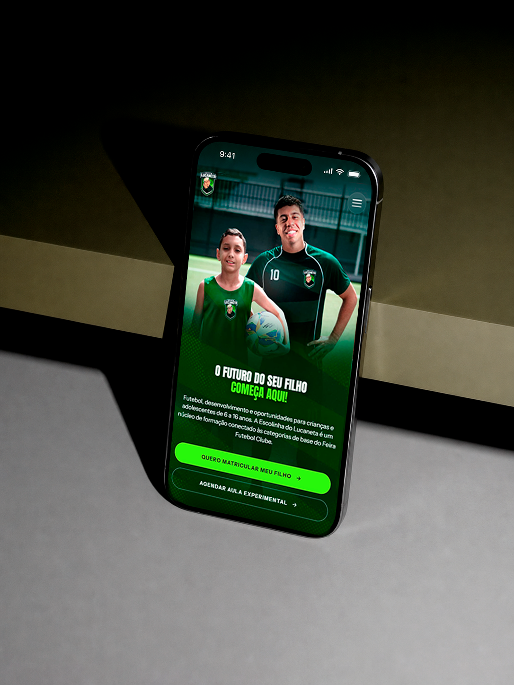
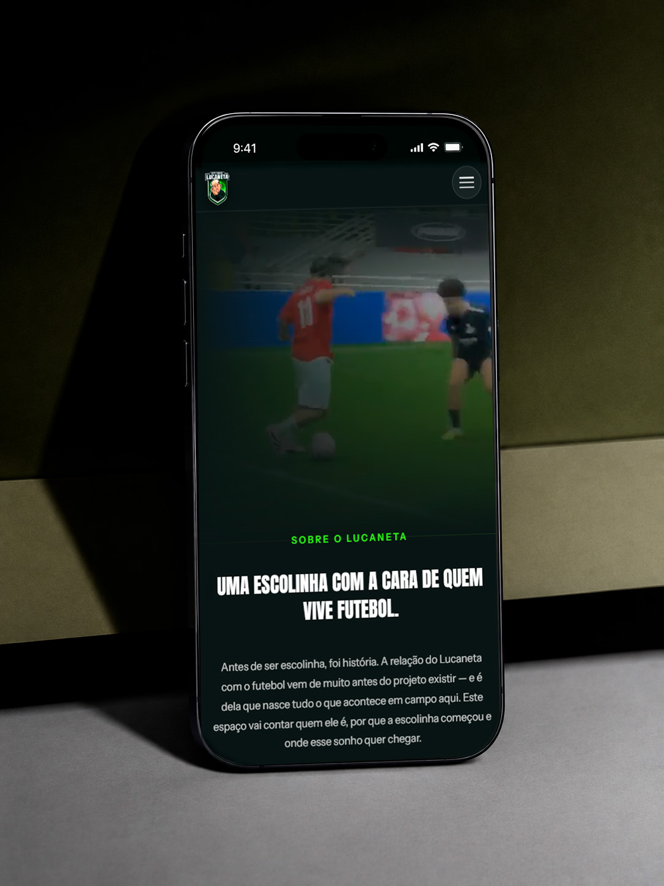

About the project
VIEW WEBSITE →Escolinha do Lucaneta is a football school in Feira de Santana for kids and teens aged 6 to 16, connected to the youth categories of Feira Futebol Clube. The site was built from scratch with two clear goals: to present the school and to make enrollment easy.
The page walks parents through everything that matters before they decide: the school's approach, the classes, the facilities and the coaching staff. Along the way, the calls to action are always within reach — enroll through WhatsApp or book a trial class with a simple form.
Visually, the green of the pitch drives the whole identity: deep, dark backgrounds with a vibrant lime green on highlights and buttons, bringing the energy of the sport and making it obvious where to click.
Colors
- #141B1A
- #0D3D17
- #1E8A2C
- #8FF73C
- #FFFFFF
Font
Anton is the headline typeface. Condensed, heavy and always set in uppercase, it echoes the numbers and lettering on jerseys and scoreboards, giving every headline the impact and energy of football.
Instrument Sans handles body text, menus and buttons. Clean and highly legible, it balances Anton's weight and keeps the information for parents clear and easy to read.
ANTON
Aa Bb Cc Dd Ee Ff Gg Hh Ii Jj Kk Ll Mm
Nn Oo Pp Qq Rr Ss Tt Uu Vv Ww Yy Zz
0 1 2 3 4 5 6 7 8 9
! # $ % * & ? /
INSTRUMENT SANS
Aa Bb Cc Dd Ee Ff Gg Hh Ii Jj Kk Ll Mm
Nn Oo Pp Qq Rr Ss Tt Uu Vv Ww Yy Zz
0 1 2 3 4 5 6 7 8 9
! # $ % * & ? /
Tools
The process started with research: I looked for references on other websites to understand what works for presenting a school and guiding visitors to enrollment. With that direction set, I built the layout foundation in Figma before moving on to code.
-
01
Figma
Layout foundation
Where the references turned into a layout. I set up the section structure, text hierarchy and the use of colors and fonts before development, creating a guide for the whole site.
-
02
Next.js
Foundation
The framework the site is built on. Pages load fast and are well indexed by Google, which helps parents find the school.
-
03
Tailwind CSS
Styling & responsiveness
Used to style the whole interface from the brand's colors and fonts, making sure every section adapts smoothly from desktop to mobile.

